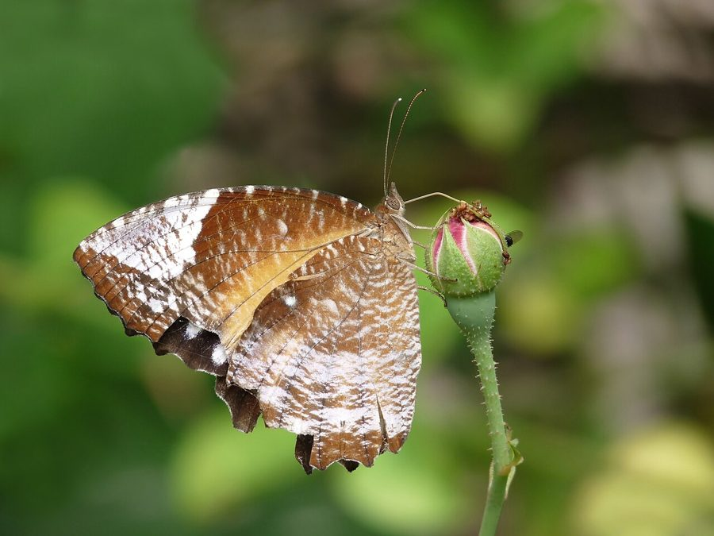

कॉमन पामफ़्लाई तितलीCommon Palmfly
Elymnias hypermnestra · Nymphalidae · INS-0138

- Scientific name वैज्ञानिक नाम
- Elymnias hypermnestra (Linnaeus, 1763)
- Family कुल
- Nymphalidae
- Hindi हिंदी
- कॉमन पामफ़्लाई तितली
- Local names स्थानीय नाम
- common palmfly, palmfly
- Status here यहाँ की स्थिति
- native
- Movement आवागमन
- Resident, here all year
- Known from कहाँ दर्ज
- Others have published records from the wider Awadh–Purvanchal plain, none yet from Basti–Ayodhya अवध–पूर्वांचल से दूसरों के प्रकाशित अभिलेख, बस्ती–अयोध्या से अभी नहीं
- IUCN IUCN
- not evaluated
- Review समीक्षा
- audited and independently read
When to look कब देखें
Present all year. साल भर मौजूद।
कॉमन पामफ़्लाई तितली / Common Palmfly
Elymnias hypermnestra (Linnaeus, 1763) — Nymphalidae
कॉमन पामफ़्लाई तितली — एक बड़ी भूरी तितली जो ताड़ के पेड़ों के पास पाई जाती है। इसके पंख गहरे भूरे-काले होते हैं और इनमें सफ़ेद या पीले धब्बे हो सकते हैं। यह तितली कौए जैसी दिखती है, जिससे शिकारी इसे खतरनाक समझते हैं। इसका कैटरपिलर हरा होता है और ताड़ की घास पर भोजन करता है।
Quick Identification त्वरित पहचान
| Feature | Description |
|---|---|
| Size | Medium to large butterfly, wingspan 40-50 mm |
| Colour | Dark brown to black-brown with white or pale markings |
| Pattern | White or pale patches on forewings; white band on hindwings; distinctive pattern |
| Mimicry | Resembles crow butterfly, unpalatable to birds |
| Sexual dimorphism | Males and females show distinct colour differences |
| Flight | Slow, fluttering flight; stays close to vegetation |
Field tip: A medium-large dark butterfly with distinctive white patches on dark wings. Resembles an unpalatable crow butterfly, which protects it from predation. Look in palm plantations and forest margins.
हिंदी — कैसे पहचानें: बड़ी काली तितली, सफ़ेद धब्बे। कौए जैसी दिखती है। पेड़ों के पास।
Morphology आकारिकी
Biometrics:
| Measurement | Range |
|---|---|
| Wingspan | 40-50 mm |
| Forewing length | 19-24 mm |
| Body length | 12-15 mm |
Wings:
- Upperside: Dark brown to black-brown; white or pale patches on forewings and hindwings; white band typically present on hindwings; pattern varies with sex and subspecies.
- Underside: Similar to upperside; pale markings visible.
Body: Dark brown to black; medium-large sized.
Sexual dimorphism: Strong sexual dimorphism present; males and females differ in colour and pattern (particularly white patch patterns on wings).
Mimicry complex: This species is a Müllerian mimic of the unpalatable crow butterfly (Euploea), gaining protection through mimicry of an unpalatable model.
Life Cycle / Phenology जीवन चक्र
| Stage / Month | Event |
|---|---|
| January–December | Year-round; multiple overlapping generations |
| Egg | Laid on palm and grass plants; incubation 6-8 days |
| Larva | Green caterpillar, often solitary and cannibalistic; feeds on palm foliage and grass; 3-4 weeks |
| Pupa | Small, greenish; formed on or near host plant; 7-12 days |
| Adult | 3-5 weeks lifespan; year-round resident |
हिंदी: साल भर। हरा कैटरपिलर, आपस में खाना-कुश्ती करते हैं।
Host Plants or Prey आहार
Larval host plants:
- Various palm species (primary host)
- Grass species and sedges (secondary hosts)
- Palm foliage generally
Adult food sources:
- Nectar from flowers
- Rotting fruit
- Fermented sap
Predators / Natural Enemies शत्रु
- Birds: Limited predation due to mimicry of unpalatable species
- Spiders: Some web-building spiders may capture them
- Parasitoid wasps: Attack caterpillars and pupae
- Ants: May predate pupae and caterpillars
Agricultural / Human Relevance कृषि प्रासंगिकता
Palm plantation association. The butterfly is associated with palm plantations, forests, and secondary growth areas with palm and grass present. Caterpillars occasionally cause minor damage to ornamental and oil palms but are rarely economically significant.
Mimicry example. A classic example of Müllerian mimicry in Indian butterflies; its resemblance to unpalatable crow butterflies provides mutual benefit.
Ecosystem role. The caterpillars feed on palm foliage and contribute to nutrient cycling. Adults are food for specialized predators that have learned to recognize the mimicry complex.
Today. Common in palm plantations, forests, and secondary growth areas throughout suitable habitat.
हिंदी: ताड़ के बागों में आम। कभी-कभी नुकसान पर आमतौर पर हानिकारक नहीं।
Expected Locally स्थानीय रूप से अपेक्षित
Not a field record. Written from published accounts for eastern Uttar Pradesh. No confirmed local sighting yet — if you have seen it, that is what the atlas needs.
अभी तक स्थानीय पुष्टि नहीं। यह विवरण प्रकाशित स्रोतों से है, किसी अवलोकन से नहीं।
To be expected year-round in palm plantations, forests, forest margins, and secondary growth areas throughout Peninsular India and suitable habitats in eastern regions. Expected in palm plantations and gardens with palm trees. A photograph with date and location would confirm a local record.
Distribution वितरण
Global range: Peninsular India, sub-Himalayas, and Southeast Asia (including Malaysia, Indochina, Indonesia).
In India: Widespread in Peninsular India, Assam, and other regions at elevations up to approximately 800 metres.
In Uttar Pradesh: Found in suitable habitats (forests, palm plantations, secondary growth) throughout.
In Basti district / eastern UP: Expected in palm plantations, forest areas, and secondary growth with suitable vegetation; year-round resident.
Research Questions शोध प्रश्न
Anyone can investigate these | कोई भी इन प्रश्नों की जाँच कर सकता है
- Which palm and grass species are preferred by Common Palmfly caterpillars in local areas? / किन ताड़ों पर कैटरपिलर सबसे ज़्यादा पाए जाते हैं? — Search palms and grasses for caterpillars.
- How many generations occur per year in the region? — Track caterpillars and pupae throughout the year.
- Are the caterpillars truly cannibalistic, and what triggers this behaviour? — Rear caterpillars in groups and observe interactions.
- How effective is the mimicry complex in protection from predators? — Examine wing damage patterns and predation scars.
- Do oil palm plantations support larger populations than native palm areas? — Compare populations in different habitat types.
Similar Species मिलती-जुलती प्रजातियाँ
| Species | How to tell apart | हिंदी |
|---|---|---|
| Crow butterfly (Euploea) species | The model for this butterfly's mimicry; both belong to mimicry complex; very similar appearance; requires expertise to separate | कौवा तितली — मॉडल प्रजाति |
| Other dark nymphalids | Generally different pattern and colour distribution; different habitat preference | दूसरी काली तितलियाँ |
Field rule: A medium-large dark butterfly with white patches and bands on dark wings, associated with palm and grass habitats, is the Common Palmfly.
Taxonomy & Classification वर्गीकरण
Original description. Described by Linnaeus in 1763 as Papilio hypermnestra in Systema Naturae. Type locality: India.
Subspecies. Multiple subspecies recognized across Asia. The subspecies found in the Andaman Islands is Elymnias hypermnestra Stoll, 1790, previously considered a full species but now treated as a subspecies.
Family and order placement. Order Lepidoptera, family Nymphalidae, subfamily Satyrinae (wood browns and allies). The genus Elymnias includes several species with similar mimicry patterns.
Phylogenetic notes. Elymnias species are Müllerian mimics of unpalatable Euploea butterflies, representing a classic example of protective mimicry in Indian butterflies.
IUCN status rationale. Not formally assessed. Abundant in suitable habitats; no conservation concerns.
Photo Gallery फोटो गैलरी
No photos yet — add field photos to media/species/common_palmfly/ and run node scripts/sync_photos.js.
Wanted:
- Male showing characteristic colour and white patches
- Female showing sexual dimorphism
- Comparison with crow butterfly (Euploea) showing mimicry
- Underside view
- Caterpillar on palm foliage
- Pupa on plant
- Adult feeding on rotting fruit
References संदर्भ
- Linnaeus, C. (1763). Systema Naturae, 10th edition. [original description]
- Kunte, K. (2009). Butterflies of Peninsular India. Universities Press, Hyderabad.
- Kehimkar, I. (2016). BNHS Field Guide: Butterflies of India. Bombay Natural History Society, Oxford University Press, Mumbai.
- Indian Foundation for Butterflies. Checklist of Indian Nymphalidae. Retrieved from https://www.ifoundbutterflies.org
- Wynter-Blyth, M. A. (1957). The Butterflies of India. 2nd edition. Bombay Natural History Society.
- GBIF Occurrence Data — Elymnias hypermnestra, India (2023). GBIF taxon key: [to be filled].
Source file: species/fauna/insects/common_palmfly.md